Karlstad-Djupdalen
GPS: 59.432768,13.488464
Allmänt
Senaste tillskottet till Karlstad boulders. Utspridda block och väggar av samma karaktär som Färjestad boulders. Inte lika stort, men heller inte lika utspritt. Outvecklat, men potential till en del fint.
Vägbeskrivning
Från Filipstadsvägen
Sväng av E18 mot väg 63 Filipstad. Kör mot Filipstad i några hundratal meter. Sväng av höger mot Djupdalen och sväng direkt vänster mot Djupdalen under väg 63. Fortsätt rakt fram några kilometer. Du bör se en mast sticka upp ur skogen på vänster sida. Leta efter en parkering några hundra meter längre fram på höger sida vid en av två avtagsvägar. En vägbom gömmer sig i buskaget vid den avtagsväg som är närmast klättringen. Parkera
vid busshållplatsen som är lite längre fram där området öppnar upp sig något. Har du kört fram till bron över Klarälven har du kört för långt. Vänd och leta. Knalla upp i skogen vid busshållplatsen och upp på åsen. Sök och du ska hitta. Ju mer du letar, desto mer hittar du. Ungefär 5 min från parkering.
Från Färjestad/skårevägen
Sväng av E18 mot stadsdelen Rud och Färjestad, följ skyltning mot Färjestad BK's arena Löfbergs Lila Arena. Fortsätt förbi denna och travbanan. Så småningom kommer du fram till en korsning och har bron över Klarälven till vänster. Se beskrivning ovan för resterande vägbeskrivning.
Om klättringen
Klättringen vid Djupdalen påminner väldigt mycket om
. Del av samma förkastning som Färjestad, Anneberg och Hästspåret och här finns en god samling av olika sorters problem.
Stället har varit känt en längre tid, men ändå har väldigt lite klättring skett. Lathet att borsta + ovetskap om stället troliga faktorer. Hoppas på ändring eftersom det finns olika sorters problem i alla svårighetsgrader vilket borde tilltala flera.
Solen silar sig fram genom träden ända tills den går ner på kvällen.
Generellt ok med platta landningar eller i blåbärsris. Dock finns även mer otäcka stenlandningar. Dödstaket kan därtill bjuda på riktiga susare där man kan trilla över höga kanter och garanterat förstöra sig.
Bra stenkvalité och strukturen i klippan ger bra friktion.
Myggen uppträder som vanligt i värmländsk skog, ta med sprej, stift. Dock inga myror som kan störa.
Har du uppgifter om FA, gjorda leder osv?
Generellt få repetitioner av problemen varpå alla grader är föremål för justering/diskussion. Ändra gärna till vad DU upplever är korrekt grad, så vi får konsensus.
Sektioner
Likt Färjestad kan man prata om övre och nedre delar allt eftersom man letar sig ner från åsen mot botten av dalen. Sektionerna delas upp och beskrivs uppifrån och ner samt söderut till norrut.
Översiktsbild kommer så småningom som förklarar bättre. Nu får man utgå från bilder och förklarande text.
Lilla svaväggen
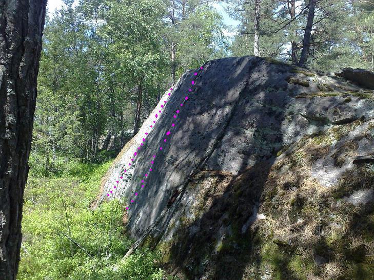
På väg upp från parkering/vägen springer du ganska snart (5 min?) på denna lilla sva-vägg. Gissningsvis 5 meter bred och 3 meter hög? Snäll lutning och trevlig landning gör den lämplig för alla. Gissningsvis 2 leder gjorda. uppgift saknas om FA och grad.
- 1
- okänt
- ?
- Vänsterdelen i det putsade området
- 2
- okänt
- ?
- Högerdelen på det putsade området.
Övre klippan
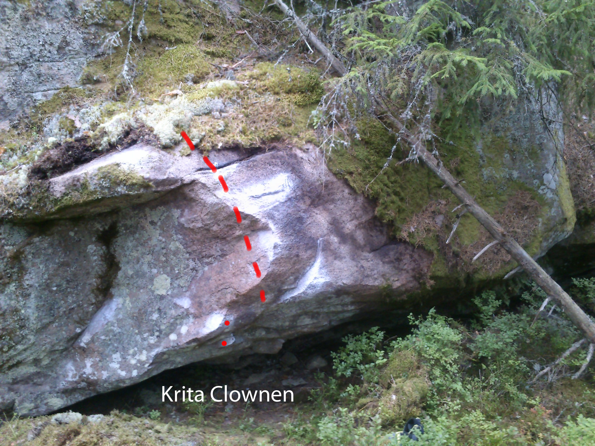
 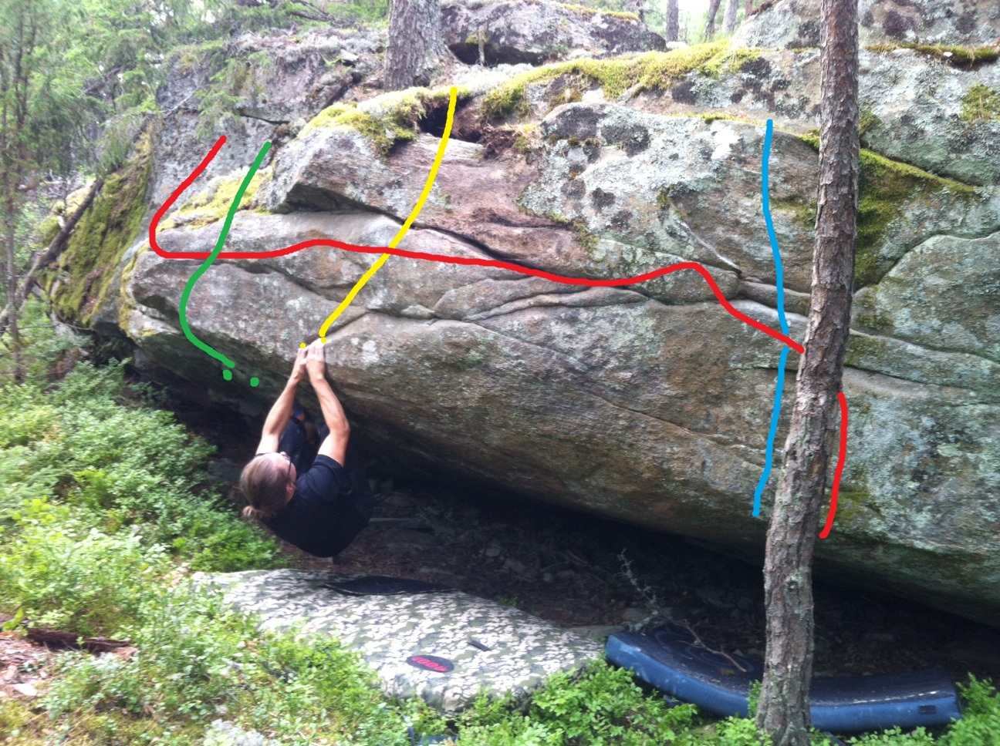
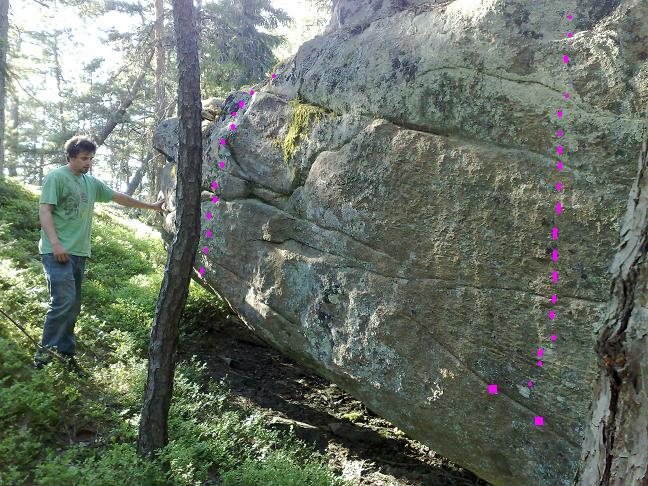
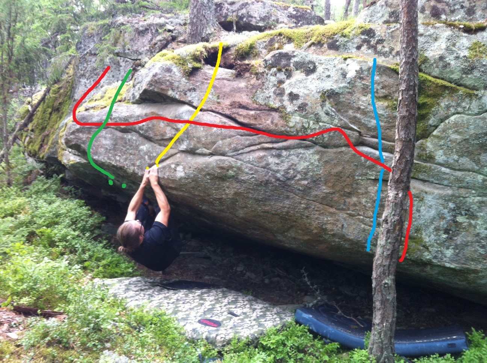
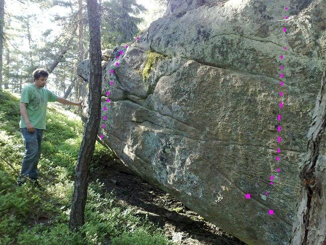

Beroende på hur du går från parkering/vägen upp genom skogen mot/på åsen, så springer du troligen på denna eller lilla sva-väggen först av alla sektioner. Denna ligger uppe på åsen och känns tydligt igen på granen som växer nästan genom väggen.
Observera att sommaren 2012 identifierades en större torrgran som blåst ner mot klippan. Den är fastkilad mot en gren precis över "en bra start på kvällen". Förr eller senare torde den rasa ner. En session med motorsågen hade eliminerat denna överhängande fara. Någon?
Fler och fler problem har blivit gjorda på övre klippan, men några nyturer återstår.
Uppdelad i två sektioner.
Vänsterdelen
Mycket estetisk sten/klippa med ett tämligen greppfritt och kraftigt överhäng/tak till generellt grepprik läpp. Bjuder på blandad problemkompott. Idel sittstarter och en 6c vid tunna sneda sprickan hittills svåraste problemet. Hårdare projekt finns dock.
Högerdelen
Utmärker sig med en gran som växer nästan genom klippan mitt på. En handfull problem gjorda.
{|
|- valign="top"
| width="350px" |
Vänster delen (problemen räknas upp från vänster till höger.
- 0
- Krita clownen
- 6c
- starta liggande under taket med en slooper i vänsternäven och ett spetsigt grepp för höger, några få men hårda moves för att ta sig upp till den bra skålformade kanten.
- 1
- Alla får ligga
- 6a+
- Kryp in under taket och lägg(!) dig längst in. Vänster hand på hyllan, höger hand på bullig crimp "klockan 2". Spänn upp så du inte dabbar och arbeta dig rakt ut med urtoppning via den friktionsrika och slopiga railen. Rosa färg i topo
- 2
- projekt
- övre 7?
- Långt till vänster. Kryp ner under överhänget. Här finns några riktigt elaka crimpar där den finger och kroppsstarke kanske orkar hålla sig kvar innan skick till bättre grepp runt läppen. Grön färg i topo.
- 3
- Jävli fin stein
- 5+
- Börja på lägsta slopiga greppet längst ut/ner på läppen. Etablera fötterna under överhänget. Kruxet är att inte glida ur slopergreppet innan skick till valfri av fina greppen högre upp. One move wonder. Fler rörelser av samma typ hade gett flera stjärnor. Gul färg på topo
- 4
- "Uppvärmnings"traversen
- 6b+
- Travers som börjar vid "Hur fungerar sverigeförarens" sloperbulliga startgrepp. Dra sedan rakt upp till bättre grepp. Traversera sedan via "mellansprickorna"(!) åt vänster. Juggar och open hands på bättre och sämre hyllor och lister tar dig frustande och svettig längst till vänster av överhänget. Där får du äntligen mantla ut. Lite elimination, men ändå fin klättring. Kändes tung, men kan också vara en släng av kronisk gubbe hos FA's som spökar. Repetitioner får avgöra grad. Röd färg i topo.
- 5
- Hur fungerar sverigeföraren?
- 6a
- Börjar på sloperbulligt startgrepp långt ner på läppen. Etablera fötterna under taket och skicka sedan till bättre grepp rakt upp. Blå färg i topo
- 6
- David "crimp & fotgurun" Sjöquist
- 6c
- Sätt dig ner, ladda crimpmusklerna och försök dra dig rakt upp. Greppen bättre ju högre du kommer (tack och lov). Tänk på fotplaceringarna!!
- 7
- En bra start på kvällen
- 6b
- Samma start som problem nr8. Sedan LÅG travers via olika bra öppna crimpar och små slopers. Krux i början. Hemma när du nått runt kanten där du mantlar upp. Orange färg på topo
- 8
- Vad sa du? Onlineförare? Nej det känner jag inte till
- 6a
- Starta vid tydliga lutande hyllan. Sedan rakt upp. Grön färg på topo.
- 9
- Dvärgdödarens uppvärmning
- 5+
- Start med vänster hand på pinch-grepp och höger hand inne i ett sidogrepp med hålighet. Lista ut var fötterna passar bäst och dra heeela vägen till valfritt fint grepp längs kanten ovan. Blå färg på topo.Variant som lägger till en rörelse och gör den finare är att starta på föregående problems sluttande hylla. Tack Per Engdahl. Annan variant är att börja ett grepp till höger för ytterligare svårighet. Tack Johan Lovén
- 10
- ???
- 6b/6b+
- Direkt till vänster om trädet. Sittstart med matchning på nedersta listen. Dvs obeskrivligt låg start. Över medellängd får stoppa in knäna i munnen innan flytt till 2-fingerpocket och vidare etablering vid lodräta sprickan. Röd färg på topo.
- 11
- En halvbra start på kvällen
- 6a+/6b
- Sittstart direkt till höger om trädet. Kruxet är att undvika trädet när du drar dig rakt upp. Ser enklare ut att nå den stora sprickan strax under toppen än vad det faktiskt är. Gul färg på topo
- 12
- projekt
- 5?
- Längst till höger är väggen numera (2012-07-25) putsad ifall någon vill göra en nytur.
Gnomblocket
Ett inte speciellt tilltalande block med ett begränsat klätterbart parti mitt på. Ligger direkt till vänster om tydliga dvärgblocket. Utrymmet mellan blocken fungerar som upp och nedstigningspassage.
{|
|- valign="top"
| width="350px" |
- 1
- Gnomdödaren
- 5+
- Till vänster om stora Dvärgblocket finns en liten plattvägg inklämd mellan en arete och ett hyllsystem. Problemet går upp på facet. Ståstart med början på "lösa" stenen farligt nära areten som inte får användas. Blocken till vänster får heller inte användas utan enbart facet ska det vara. Sträckning, catch till stora tvärsprickan och sedan utsteg klockan 10-11 från startpositionen sett. Kruxet = att nå tvärsprickan om man är kort, att undvika förbjuden mark om man är lång. Förstabestigningen nästan ogiltigförklarad av detta skäl. Vem blir verkligen först?
- 2
- Loose rock
- 5-
- går upp på areten till höger om gnomdödaren. Borstad 2009-06-30, dock så hårt att hela areten numera består till 60% lös sten. Har hållit för repetitioner, men du drar i greppen på egen risk.
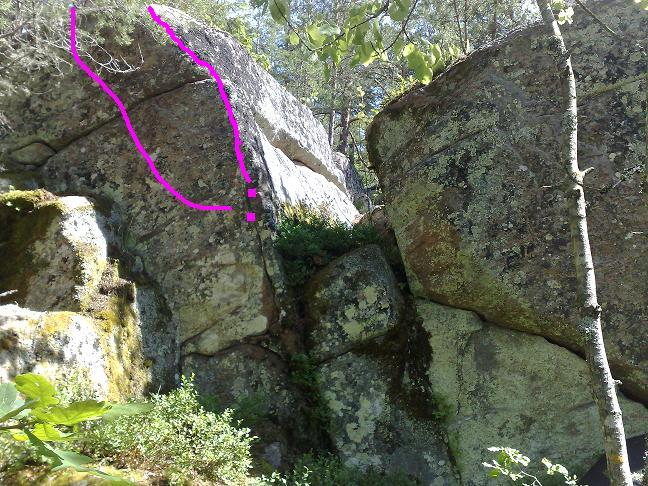
Dvärgblocket
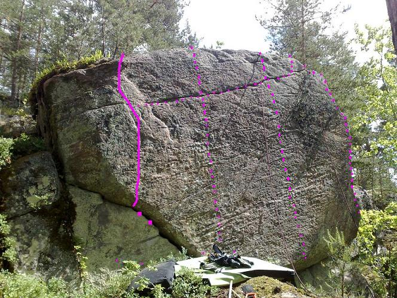
Blocket uppkallat efter det första problem som är gjort på det.
Ett 5-6 meter högt block med två tydliga, relativt tunna tvärsprickor som klyver det rakt över. Oftast platt landning, men tyvärr finns nivåskillnader och bulliga stenar. Flera paddor och spotters ingen dum idé.
I princip hela blocket blev putsat 2009-06-14 då även några småträd runtom fälldes till förmån för upptorkning och det öppna landskapet.
Problemen uppräknade från vänster till höger.
{|
|- valign="top"
| width="350px" |
- 0
- Dvärgflykten
- 5
- Börjar på samma grepp som dvärgdödaren, men sticker direkt vänster och följer areteformationen upp åt vänster. Du fuskar väl inte på nedstigningsledens stenformation till vänster? Fin uppvärmning
- 1
- Dvärgdödaren
- 6c
- Fint problem som börjar i tydliga tvärsprickan i vänstra hörnet på Dvärgblocket. Fotmöblering, undercling och crimp etablerar dig för skick till bra grepp låååångt upp. Är du kortare än 184cm måste du förmodligen mellanlanda på obefintliga och desperata grepp, därav namnet på problemet.
- 2
- projekt
- 7-isch
- projekt där du börjar på samma ställe som {{ledlänk|namn=Dvärgdödaren}}, letar dig upp till tvärsprickorna som klyver hela Dvärgblocket och tar dig via dessa från vänster till höger. Händerna i övre sprickan, fötterna i nedre? Den är hög och seriöst tunn. Därför läskig, men ack så estetisk. Borstad juni -09.
- 3
- projekt
- 7-isch
- Till höger om dvärgdödaren går en lodrät desperat linje över tvärsprickorna. Du börjar med fötterna på den u-formade listen. Leta vassa crimpar och knoppar för händerna och försök hålla dig kvar. Sällsynt crimpstyrka och tassiga fötter troliga framgångsfaktorer.
- 4
- projekt
- 7-isch
- Ingen som provhängt på denna delen. 1-2 meter till vänster om högerareten ska du via små, små saker ta dig rakt upp över tvärsprickorna. Endast delvis borstad juni -09
- 5
- Högerareten
- lägre 5?
- Areten längst till höger på Dvärgblocket. Ser svårare ut nedifrån än vad den faktiskt är. Snälla hyllor och juggar finns fast det inte ser så ut. Lite lurig landning om man går upp på svasidan. En finare variant som gör den marginellt hårdare är att gå upp vänster om areten. Luftigare, men lättare att padda upp. Borstad juli 2012. Förstabestigningen skedde i härligt samspel med snö och is.
Lilla taket
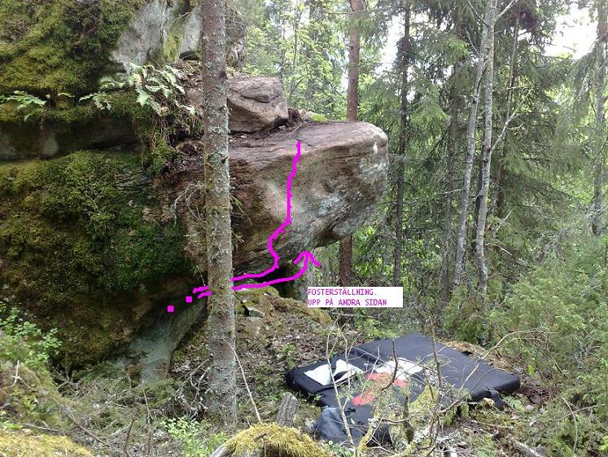
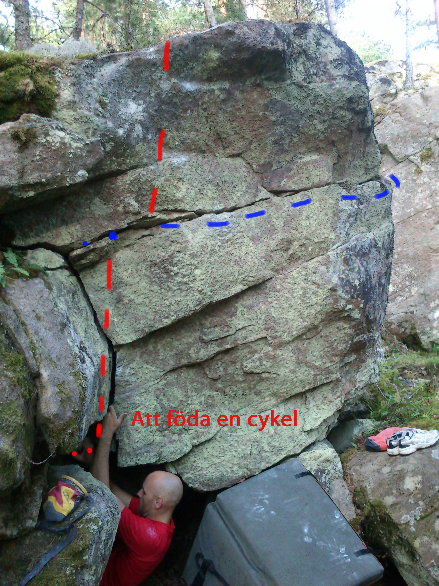
Snett ner från dvärgblocket hittar du denna läckerbit.
Fick smaka stålborste första gången 2009-06-14. Taket såg vid första inspektion tämligen grepplöst ut. En sten lossnade dock vilket direkt utnyttjades till att etablera två problem.
Det underlättar om du konsulterar Inspector Gadget angående indragbara teleskop-ben och utdragbara armar innan press.
Tappar du fötterna och får sällsynt kraftig pendel, så kanske du lyckas trilla över kanten till fallhöjd ner i buskar, sten och allmänt aj aj.
{|
|- valign="top"
| width="350px" |
- 1
- Vilken j**la dret
- 6a+
- Börja med att matcha på lilla hyllan inne under taket. Benen får du stoppa in där de får plats. Stenen i fothöjd nere till höger under taket används med eget samvete. Krångla dig sedan ut till vänster och ut/upp till höger om granen. Crimpen innan läppen är halv-lös men höll för 84kg gubbe. De som kan mantla har det enklare än de som inte kan, därav namnet.
- 2
- Fosterställning
- 6b
- Match på hyllan längst inne under taket. Vänster hand till ok grepp som delas med föregående problem. Sedan ska du ut/upp mer eller mindre rakt fram.
- 3
- projekt
- 7-isch?
- Börja på samma grepp som föregående problem. Dra dig sedan ut åt höger. Tung och elak crimp finns i taket. Nästan lika dåliga crimpar finns ute på läppen. Därifrån ska du orka skicka till fina kanten.
- 4
- Att föda en cykel
- 6a
- Till höger om lilla taket finns en liten grotta. Kryp ned i denna och leta dig ut ur den rakt upp med hjälp av crimpers och jamm. Den stora mossiga stenen till vänster om grottan ingår ej
- 4
- namn kommer...
- 4?
- Ståstart vid grottöppningen. Traversera via fina grepp och steg åt höger och toppa ut runt hörnet.
Dödstaket
Ett inbjudande block med flera vertikala problem till vänster och höger om själva "taket". (Döds)taket i sig bjuder på jugfestival i relativt brant överhäng med 2-3 individuella problem. Spottning omöjlig vilket gör att pendel och släpp här garanterat skickar dig över avsatsen och 4 meters ytterligare dropp ner i skog och sten. Funderingar pågår om man kan säkra upp med någon form av repanordning. Annars är det överkapacitet och mental övertygelse som gäller vilket kanske återspeglas i problemnamnen och brist på repetitioner.
Putsat och grovrensat juni -09 då även lite grenar och småträd tagits bort vilket underlättar framkomligheten och förhoppningsvis bidrar till upptorkningen.
{|
|- valign="top"
| width="350px" |
- 1
- Inget Psykbryt
- 5+
- Ganska fint, vertikalt problem längst till vänster av dödstaket. Börja med armarna i stora-kram-positionen *--0--* och dra dig rakt upp. Sikta på det lilla "taket/flaket" och passera det. Du ska vara sällsynt klantig om du lyckas trilla över kanten som skapar gruvsamheten på de andra problemen.
- 2
- projekt
- 5-6isch?
- En bit till vänster vilket gör att du förmodligen slipper åka över kanten vid fall. Ett utstickande bergsparti och ett litet träd blir förmodligen din räddning i så fall.
- 3
- Panikångest
- 5a
- Fina grepp till flaket, därifrån sträckning till kant och urtoppning. Det lätta kruxet är i slutet, men där vill/får man å andra sidan inte falla.
- 4
- Mindfuck
- 6b-6c
- Börja med match på snälla startgreppet/hyllan, halvhårt move (som sätter graden) upp till snälla flaket, därifrån juggar och 5-klättring upp till tunnare och något psykologisk mantling uppe på hornet. Spottning inte möjlig och fall här gör att du får en rejäl åktur på 6(?) meter ner i skog och sten, vilket förmodligen ligger bakom bristen på repetitioner. Fin, men läskig klättring.
- 5
- projekt
- ?
- projekt till höger om dödstaket. Oputsat och ej inspekterat närmare
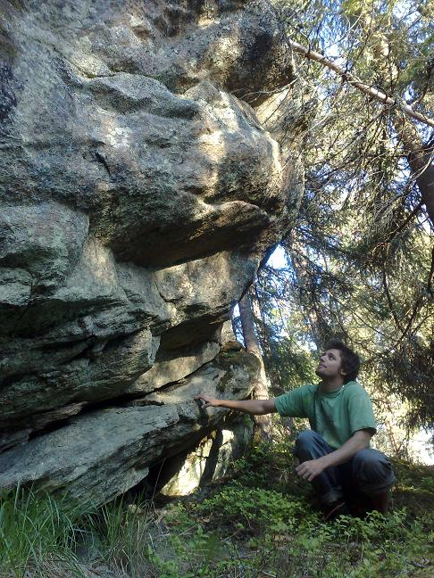
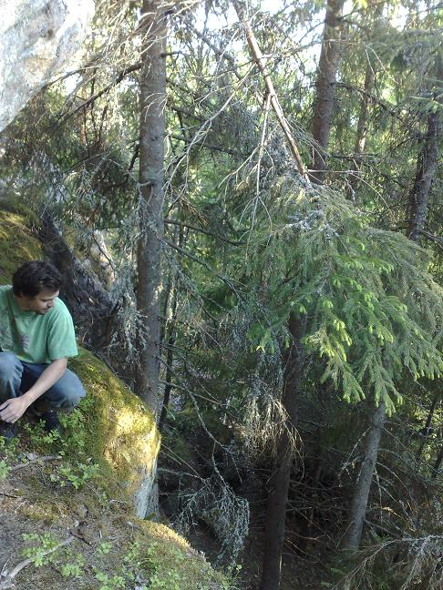
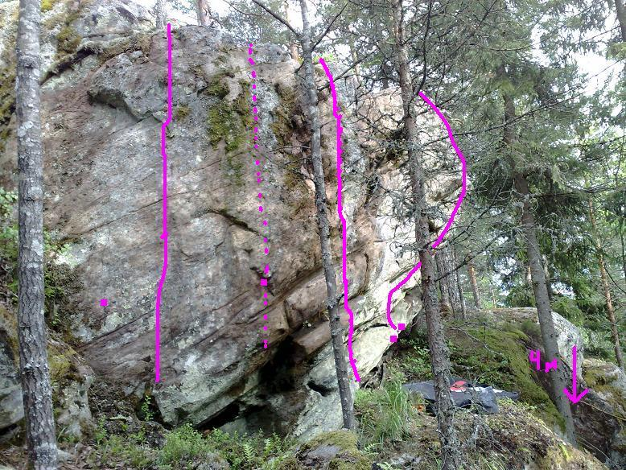
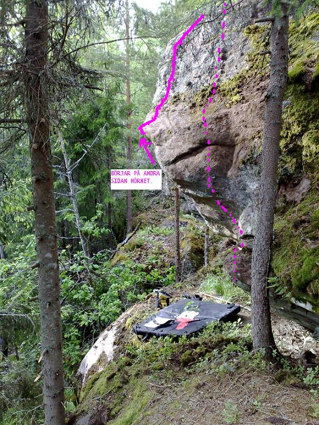
Bortre Djupdalen
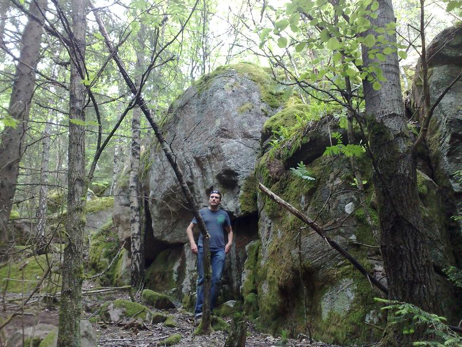
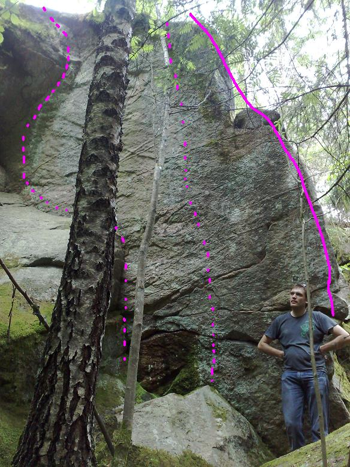
Några hundratal meter längre in i dalen ligger dessa block. Klippan är putsad och marken förberedd på ett sådant sätt att klättring skett här inom rimlig tidsrymd.
För att hitta hit, så bege dig längst ner i dalen och vandra uppåt/inåt skogen från vägen sett. Speja hela tiden åt höger efter ett högre tydligare bergsparti. En bäck slingrar sig fram i botten på dalen inte långt från blocken. Leta och du skall finna.
Ingen information finns om FA och grader på dessa stenar. Har DU information om detta så klicka på redigeraknappen ovan och fyll i.
Oklart om något vettigt att klättra på finns ännu längre in i skogen.
{|
|- valign="top"
| width="350px" |
- 1
- namn på problemet
- 5b
- förklarande text om problemet
- 2
- namn på problemet
- 5b
- förklarande text om problemet
- 3
- namn på problemet
- 5b
- förklarande text om problemet
- 4
- namn på problemet
- 5b
- förklarande text om problemet
Block X
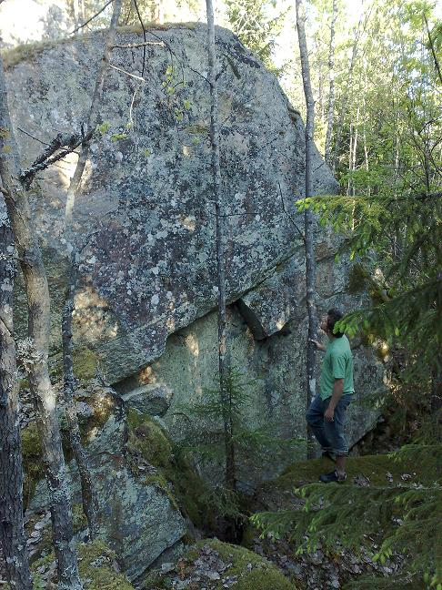
Ytterligare X antal block identifierade. Beskrivningar och leder kommer allt eftersom de klättras. Titta in med jämna mellanrum för att få senaste uppdateringen.
{|
|- valign="top"
| width="350px" |
- 1
- namn på problemet
- 5b
- förklarande text om problemet
- 2
- namn på problemet
- 5b
- förklarande text om problemet
- 3
- namn på problemet
- 5b
- förklarande text om problemet
- 4
- namn på problemet
- 5b
- förklarande text om problemet
Block Y
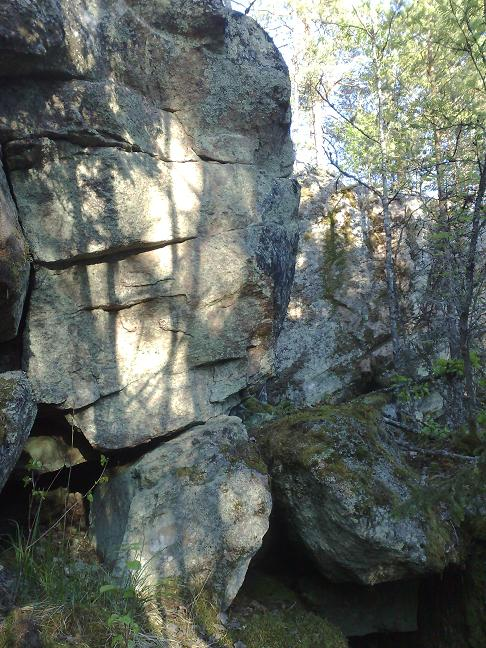
Ytterligare X antal block identifierade. Beskrivningar och leder kommer allt eftersom de klättras. Titta in med jämna mellanrum för att få senaste uppdateringen.
{|
|- valign="top"
| width="350px" |
- 1
- namn på problemet
- 5b
- förklarande text om problemet
- 2
- namn på problemet
- 5b
- förklarande text om problemet
- 3
- namn på problemet
- 5b
- förklarande text om problemet
- 4
- namn på problemet
- 5b
- förklarande text om problemet
Kategori:vertikalt
Kategori:överhäng
Kategori:bouldering
Category:Värmland
Copyright (C) Permission is granted to copy, distribute and/or modify this document under the terms of the GNU Free Documentation License, Version 1.3